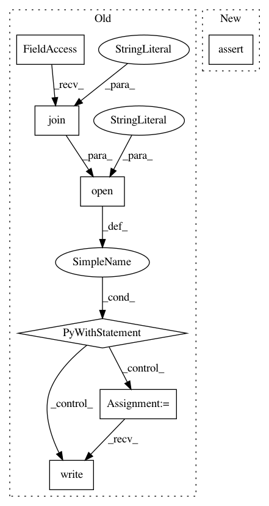

e3d577b5595af3e1c9a05d3be84dbdf1a7c4aa20,nilearn/datasets/tests/test_atlas.py,,test_fetch_atlas_aal,#Any#Any#,379
Before Change
def test_fetch_atlas_aal(tmp_path, request_mocker):
ho_dir = str(tmp_path / "aal_SPM12" / "aal" / "atlas")
os.makedirs(ho_dir)
with open(os.path.join(ho_dir, "AAL.xml"), "w") as xml_file:
xml_file.write("<?xml version="1.0" encoding="us-ascii"?> "
"<metadata>"
"</metadata>")
dataset = atlas.fetch_atlas_aal(data_dir=str(tmp_path), verbose=0)
assert isinstance(dataset.maps, str)
assert isinstance(dataset.labels, list)
assert isinstance(dataset.indices, list)
After Change
assert isinstance(dataset.maps, str)
assert isinstance(dataset.labels, list)
assert isinstance(dataset.indices, list)
assert request_mocker.url_count == 1
with pytest.raises(ValueError,
match="The version of AAL requested "FLS33""
):
In pattern: SUPERPATTERN
Frequency: 3
Non-data size: 7
Instances
Project Name: nilearn/nilearn
Commit Name: e3d577b5595af3e1c9a05d3be84dbdf1a7c4aa20
Time: 2020-07-29
Author: jerome@dockes.org
File Name: nilearn/datasets/tests/test_atlas.py
Class Name:
Method Name: test_fetch_atlas_aal
Project Name: pantsbuild/pants
Commit Name: df75d99aa353ecf4dd69185232041c952a3f72b7
Time: 2014-12-03
Author: john.sirois@gmail.com
File Name: tests/python/pants_test/graph/test_build_graph.py
Class Name: BuildGraphTest
Method Name: test_transitive_closure_address
Project Name: azavea/raster-vision
Commit Name: aa073a525a5638e87e479a7a146e89a61092ab3b
Time: 2018-10-15
Author: jmcclain@azavea.com
File Name: tests/utils/test_files.py
Class Name: TestLocalMisc
Method Name: test_last_modified